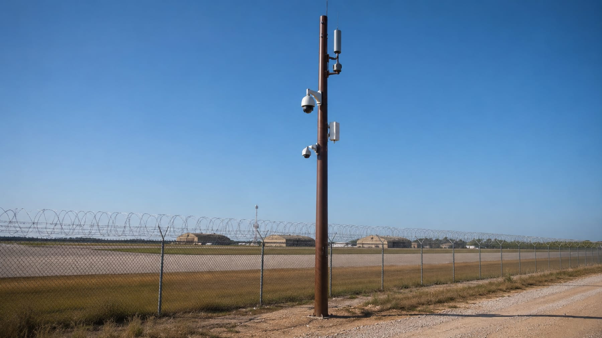

Estructuras composite para infraestructura crítica
Redes de telecomunicaciones, redes eléctricas y sistemas urbanos, con materiales que no se corroen ni necesitan mantenimiento.
El material resuelve el problema de ciclo de vida
La infraestructura de red envejece por corrosión, degradación ambiental y coste de mantenimiento, no por falta de resistencia inicial. Un composite con grafeno funcionalizado cambia esa ecuación.
- Sin corrosión: excelente comportamiento en niebla salina y ambientes agresivos (ISO 9227)
- Sin mantenimiento: estable a la intemperie y con alta resistencia UV
- Ligereza: instalación más simple, menos medios auxiliares
- Seguridad eléctrica: material aislante, no conductor (IEC 60093)
- Vida útil larga y 95 % reciclable al final de su vida
Un solo soporte, varios sistemas
Estructuras preparadas para integrar cámaras, antenas, equipamiento de red y sensórica, en entornos que exigen fiabilidad y baja intervención.
Telecomunicaciones
Soportes para red de fibra, radio y equipamiento de comunicaciones.
Redes eléctricas
Estructuras aislantes para distribución en media y baja tensión.
Sistemas urbanos y perimetrales
Vigilancia, control de accesos y equipamiento en instalaciones sensibles.
¿Buscas producto de catálogo, no desarrollo?
Graphenglass desarrolla la tecnología y el material. Si lo que necesitas es comprar o prescribir producto estándar, tu interlocutor son las marcas de producto del grupo.
Enlaces pendientes de destino final, a la espera de definir los dominios de las marcas de producto.
¿Una estructura que hoy no existe?
Si el requisito no lo cubre ningún producto de catálogo, ese es nuestro punto de partida.